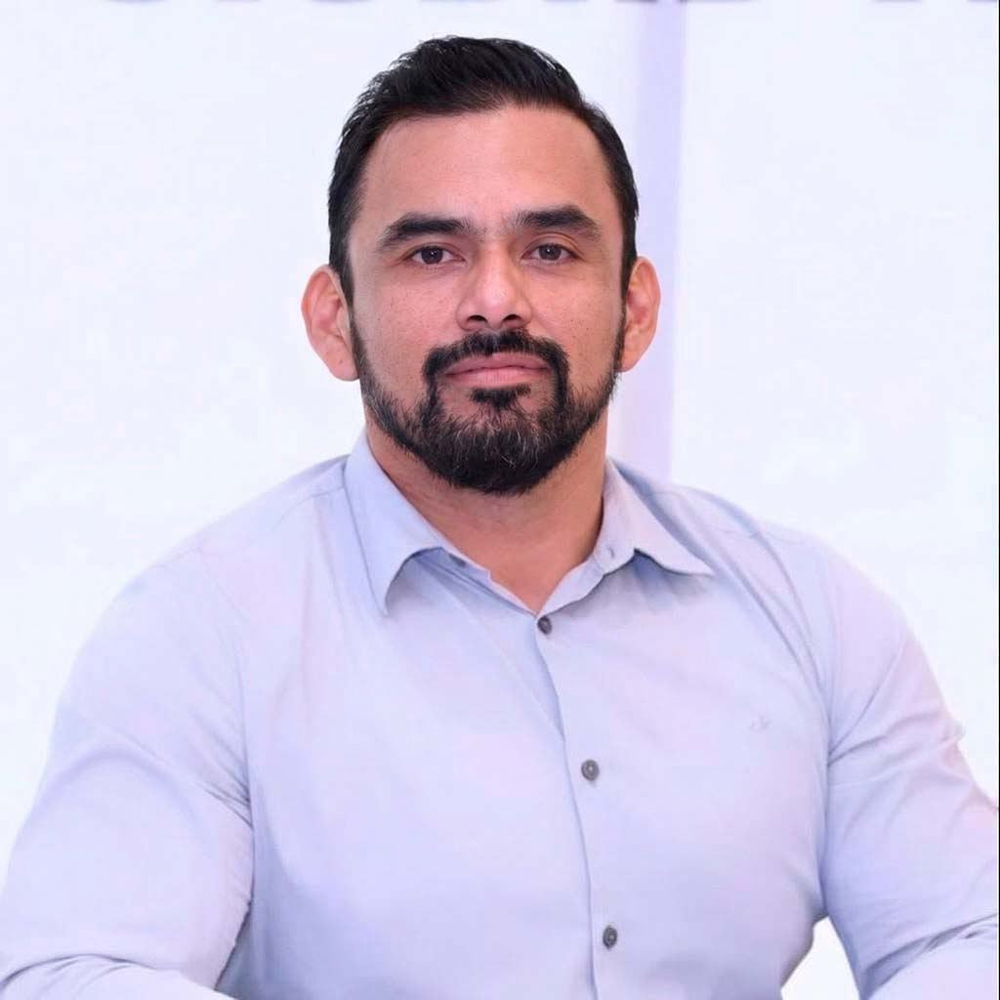

CTO · Arquitecto de Software · Servidor Público · Maestrante en Política y Gestión Pública
Más de 20 años diseñando sistemas de misión crítica para gobierno y sector salud a nivel nacional e internacional. Combino una trayectoria técnica de alto nivel con experiencia real como representante electo y gestor público en Tamaulipas.

Soy Licenciado en Computación Administrativa por la UAT, actualmente cursando la Maestría en Política y Gestión Pública. Mi carrera inició en el mundo del desarrollo de software gubernamental y de salud, liderando proyectos de alcance nacional e internacional.
A lo largo de los años he complementado mi perfil técnico con una participación activa en la vida pública: fui Regidor Propietario en el Cabildo de Victoria (2018–2021), Diputado Suplente en la Legislatura 65 del Congreso de Tamaulipas, y actualmente me desempeño como Coordinador Municipal de Movimiento Ciudadano.
Hoy lidero Softbot como CTO, desarrollando soluciones tecnológicas para la iniciativa privada en automatización de procesos y toma de decisiones.
Más de dos décadas construyendo sistemas robustos para el sector salud, gobierno y empresa privada.
Cargo público electo y participación en los tres niveles de gobierno.
Participación en procesos electorales federales y locales desde 2012.
¿Tienes un proyecto o propuesta? Estoy disponible para consultoría tecnológica, colaboraciones y proyectos en la región.